2021
BRUCE & WENDY
A Geometric Essay on Architectural Assemblies
Could the idea of the thneed - a textile that can morph and reshape itself - be applied within an architectural context?
CONTEXT
4.105: Geometric Disciplines and Architectural Skills, Massachusetts Institute of Technology
SOFTWARE + TOOLS
Grasshopper, Rhinoceros3D, Illustrator, Laser cutting
SUPERVISOR
J Jih
This project examines the possibility of the aggregation of limp sheet materials into structural assemblies via zipping and weaving techniques. In place of fasteners, these forms are self-supporting and can thus be disassembled and re-assembled at will. This process, which could be likened to textile Lego, may be able to find uses in many facets of life, most notably the architectural and fashion industries, where the ability to reconfigure and deconstruct a garment or an enclosure at will may not only aid in creating multi-purpose assemblies but also reduce material use.
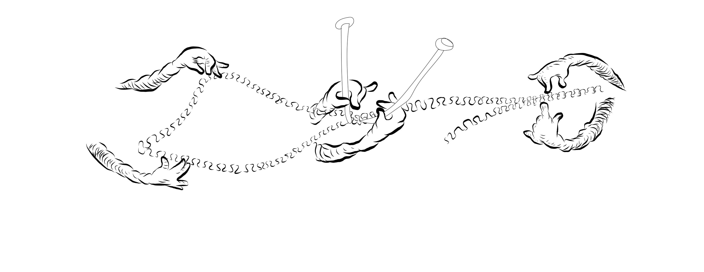
BRUCE
a leather assembly
meet bruce.
He is a fun-loving guy who just rolls with the punches. His favorite food is Hawaiian pizza but without the pepperoni. Almost he may seem rough on the outside, his texture on the inside is entirely different. His leather assembly gives him a more three-dimensional assemblage with tabs building a formal landscape within his form.
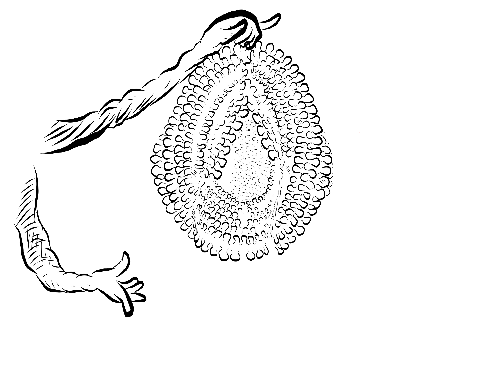


WENDY
an acetate assembly
Wendy portrait + assembly drawing
meet wendy.
She enjoys long walks on the beach and pets of all kinds, specifically parrots. As she is transparent, both in her professional and personal lives, you can clearly see what makes her tick. The clear acetate material flattens the assembly and leads her to seem sleeker in photos than she is in real life.
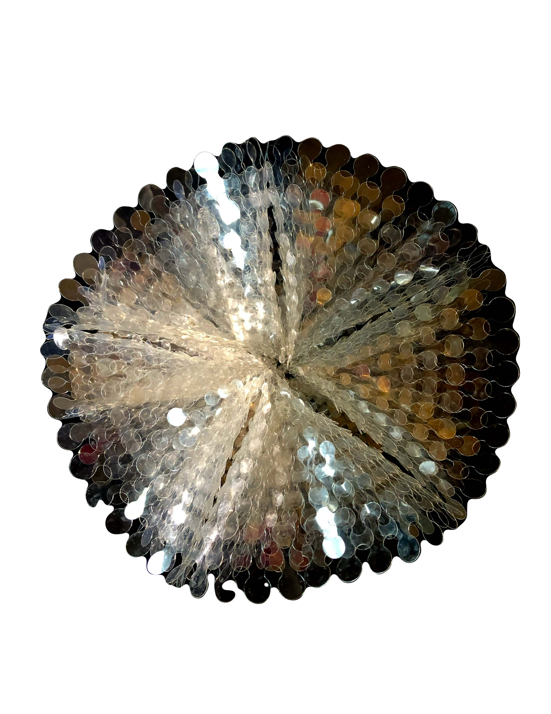
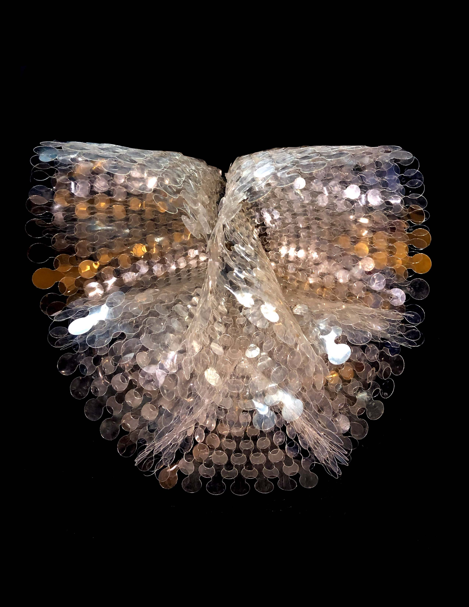
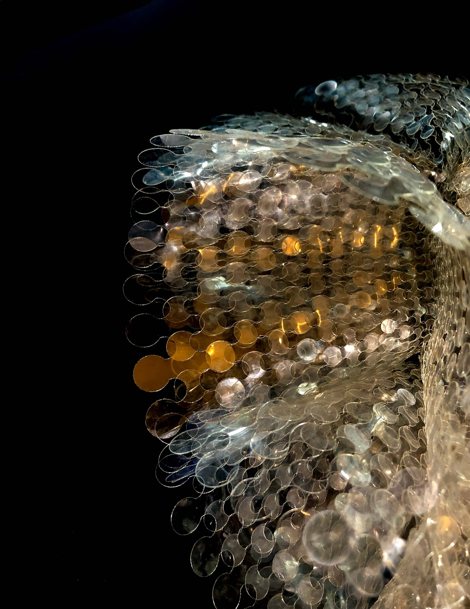
alternate configurations of
wendy...
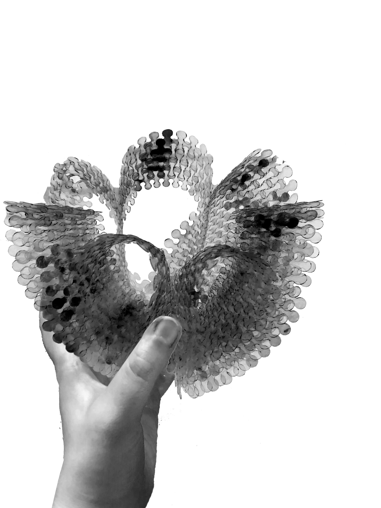
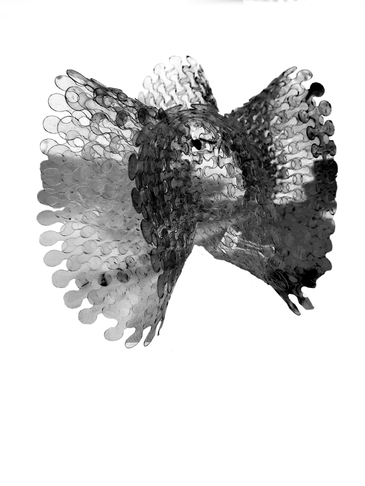
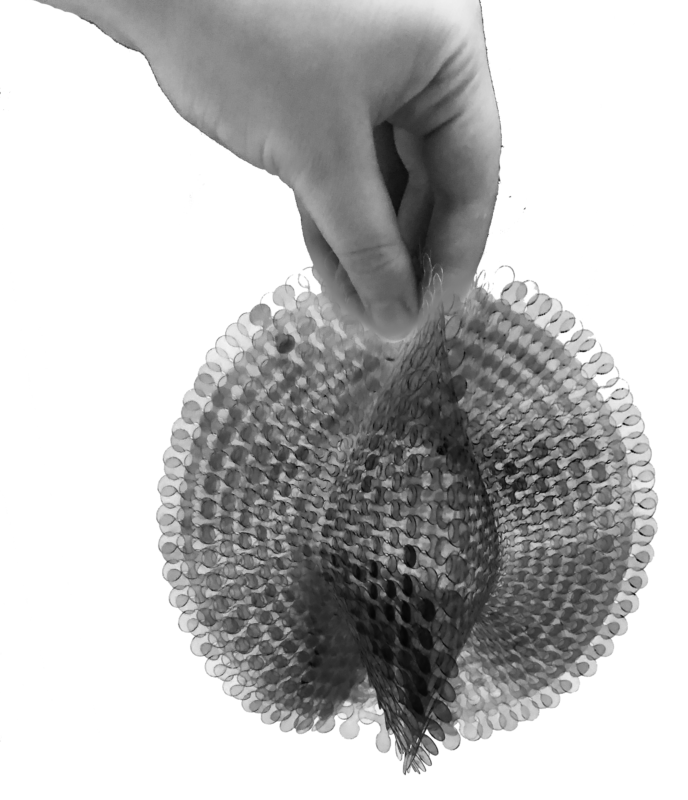
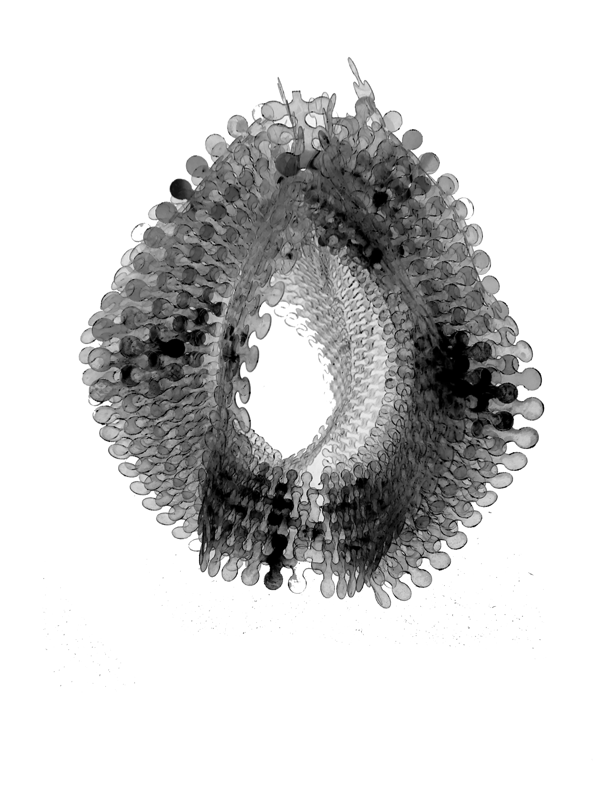
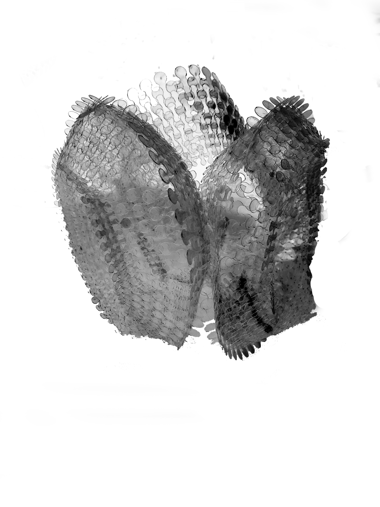
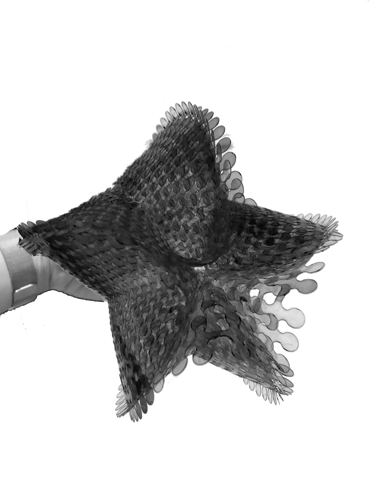